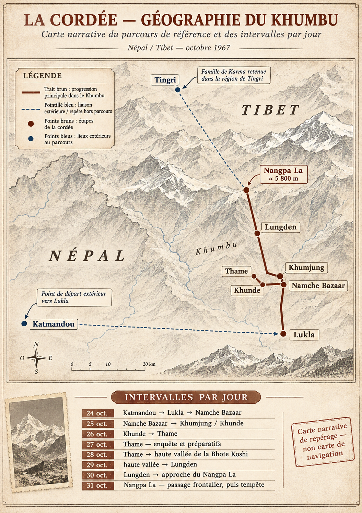

Ouverture des pièces documentaires…
BUREAU DES INTERSTICES · SCÉNARIO 02
La Cordée
Annexes et pièces documentaires

Toucher l'image pour consulter la carte en grand.
Carte narrative de repérage, non destinée à la navigation.
BUREAU DES INTERSTICES · SCÉNARIO 02
Annexes et pièces documentaires

Ouverture des pièces documentaires…